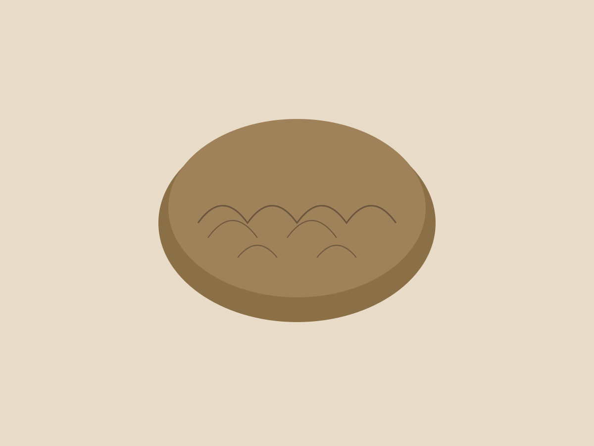
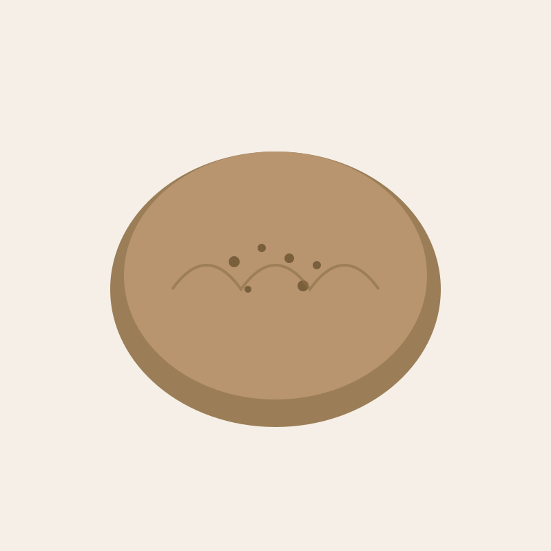
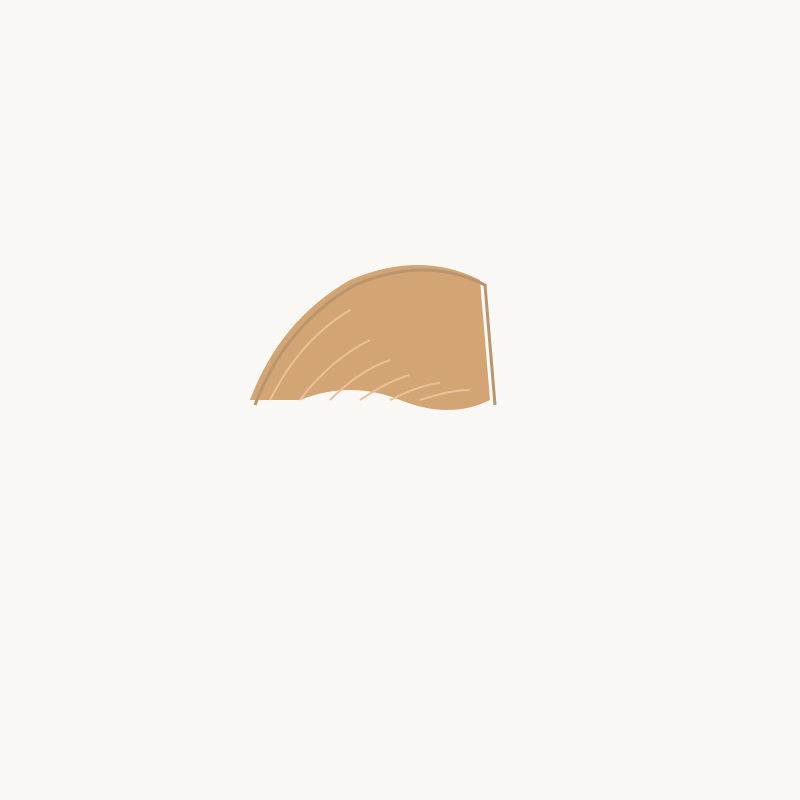
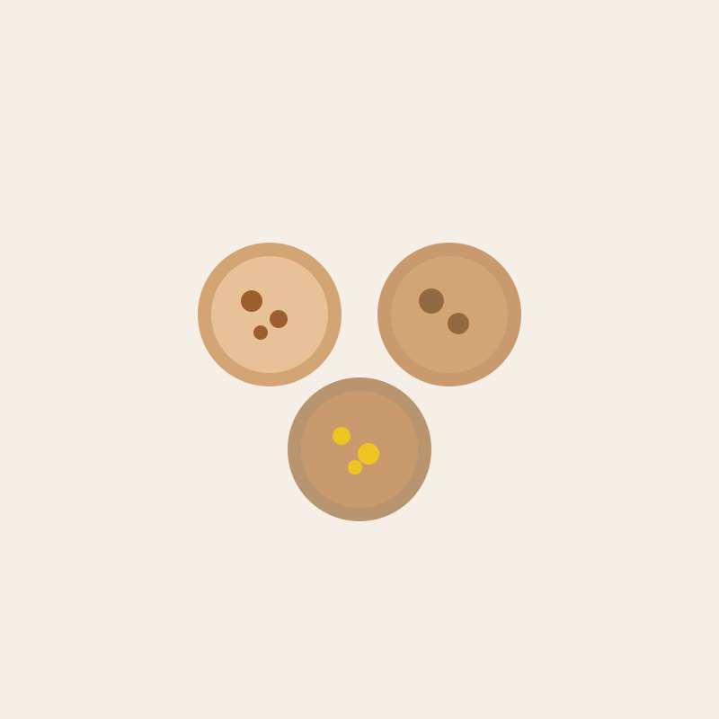
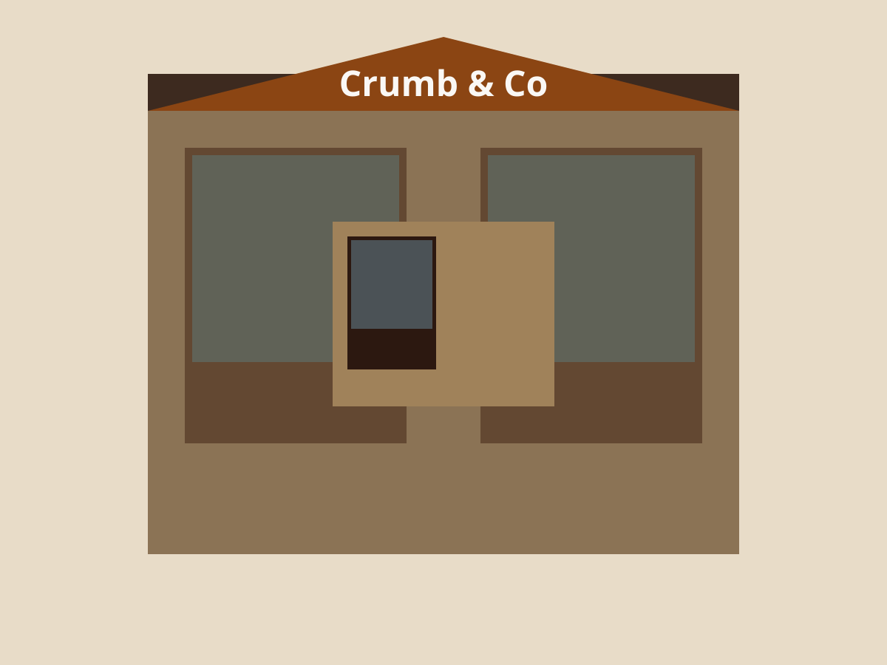

Handwerkliche Bäckerei in Basel
Sauerteig und Gebäck mit Seele
Bei Crumb and Co backen wir jeden Tag frisches Sauerteigbrot und feine Gebäcke. Unsere Backwaren entstehen mit Zeit, hochwertigen Zutaten und echter Handarbeit.

Was wir backen

Sauerteigbrote
Unsere klassischen Sauerteigbrote brauchen 24 bis 48 Stunden. Dinkel, Roggen, Vollkorn – jedes Brot hat seinen eigenen Charakter und eine kräftige Kruste.

Feingebäck
Butter-Croissants mit 27 Schichten, Pain au Chocolat, und saisonale Stückchen. Hergestellt aus französischer Butter und ohne Kompromisse.

Saisonales
Von Zimtschnecken im Herbst bis zu Zitronentörtchen im Sommer. Wir arbeiten mit den Jahreszeiten und lokalen Zutaten aus der Region Basel.
Warum Sauerteig?
Sauerteig ist eine lebendige Kultur aus wilden Hefen und Milchsäurebakterien. Diese Mikroorganismen brauchen Zeit – aber sie geben dem Brot Geschmack, Struktur und bessere Bekömmlichkeit.
Wir pflegen unseren Starter seit der Eröffnung 2019. Jedes Brot entsteht aus dieser einen Kultur, ohne zugesetzte Hefe, ohne Zusatzstoffe.
Füttern des Starters
Jeden Morgen füttern wir unseren Sauerteigstarter mit frischem Mehl und Wasser. Er braucht 4 bis 6 Stunden, bis er aktiv ist.
Teig ansetzen und falten
Der Teig entsteht aus Starter, Mehl, Wasser und Salz. Über 12 bis 24 Stunden wird er mehrfach gefaltet, um Struktur aufzubauen.
Formen und ruhen lassen
Jeder Laib wird von Hand geformt und ruht über Nacht im Kühlschrank. Dort entwickelt der Teig seinen vollen Geschmack.
Backen im Steinofen
Am Morgen gehen die Brote bei hoher Hitze in den Ofen. Dampf sorgt für die knusprige Kruste, die einen guten Laib ausmacht.
Besuchen Sie uns
Unsere Bäckerei liegt im Herzen von Basel, nur wenige Minuten vom Bahnhof SBB. Kommen Sie vorbei für frisches Brot, einen Kaffee und ein Croissant.
Adresse
Gerbergasse 24
4051 Basel
Schweiz
Öffnungszeiten
Kontakt

Wir freuen uns auf Ihren Besuch bei Crumb and Co in Basel.